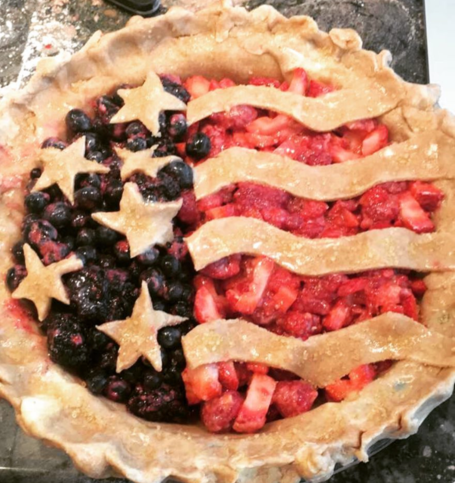

COOKING UNCORKED
cheers to a delicious adventure
Triple Berry Patriot Pie

Ingredients
- 2 pie crusts
- 1 cup fresh strawberries, halved
- 2 cups fresh raspberries
- 1.5 cups fresh blueberries
- 1/2 cup white sugar
- 4 tablespoons cornstarch
- zest of 1 lemon
- juice of 1 lemon
- 1/2 teaspoon ground cinnamon
- dash nutmeg
- dash salt
- 2 tablespoons butter
Directions
- Start off by making pie dough as they should chill for 30 minutes.
- Preheat oven to 375 F.
- After chilling, transfer one piece of dough to a lightly floured surface. Roll the dough to form a 12-inch circle. Wrap the crust around the rolling pin. Unroll it onto a 9-inch pie plate. Ease the crust into the pie plate, being careful not to stretch it. Trim the bottom crust evenly with the rim of the pie plate and crimp the edges of the crust. Place the dough-lined pie plate in the refrigerator.
- In a large mixing bowl, stir together sugar, cornstarch, and lemon zest.
- Add the strawberries, raspberries, and blueberries; gently toss until berries are coated. Let the fruit mixture stand for about 15 minutes.
- Roll out the remaining pastry for the top crust. Here's where you can get creative with your decorations!
- Stir the berry mixture and pour the filling into the pastry-lined pie plate. Place the top crust over the pie. Dot the top with butter and sprinkle with sugar. To prevent over-browning, cover the edge of the pie with foil.
- Bake in the preheated oven on the baking tray for 25 minutes. Remove the foil.
- Bake for an additional 20 to 30 minutes, or until the filling is bubbling and the crust is golden. Cool on a wire rack.